<!DOCTYPE html>


  <html class="light page-post">


<head><meta name="generator" content="Hexo 3.9.0">
  <meta charset="utf-8">
  
  <title>无线网络安全上机作业 | LittleGhost&#39;s Blog</title>

  <meta name="viewport" content="width=device-width, initial-scale=1, maximum-scale=1">

  
    <meta name="keywords" content="无线网络安全,">
  

  <meta name="description" content="实验5  AM 信号接收解调一、AM信号调制解调的原理使用另一余弦信号，对AM信号进行频谱搬移，通过带通滤波器滤除其他信号，然后对信号进行解调，即可收听解调后的AM信号。 二、信号流程图及波形 连接“File Source、Throttle、WX GUI FFT Sink”模块    使用一个 Variable 模块和“Rational Resampler”模块    增加一个带通滤波器滤除其他的">
<meta name="keywords" content="无线网络安全">
<meta property="og:type" content="article">
<meta property="og:title" content="无线网络安全上机作业">
<meta property="og:url" content="https://littleghost2016.github.io/2018/07/16/无线网络安全上机作业/index.html">
<meta property="og:site_name" content="LittleGhost&#39;s Blog">
<meta property="og:description" content="实验5  AM 信号接收解调一、AM信号调制解调的原理使用另一余弦信号，对AM信号进行频谱搬移，通过带通滤波器滤除其他信号，然后对信号进行解调，即可收听解调后的AM信号。 二、信号流程图及波形 连接“File Source、Throttle、WX GUI FFT Sink”模块    使用一个 Variable 模块和“Rational Resampler”模块    增加一个带通滤波器滤除其他的">
<meta property="og:locale" content="zh-Hans">
<meta property="og:image" content="https://littleghost2016.github.io/2018/07/16/无线网络安全上机作业/5-1.png">
<meta property="og:image" content="https://littleghost2016.github.io/2018/07/16/无线网络安全上机作业/5-2.png">
<meta property="og:image" content="https://littleghost2016.github.io/2018/07/16/无线网络安全上机作业/5-3.png">
<meta property="og:image" content="https://littleghost2016.github.io/2018/07/16/无线网络安全上机作业/5-4.png">
<meta property="og:image" content="https://littleghost2016.github.io/2018/07/16/无线网络安全上机作业/5-5.png">
<meta property="og:image" content="https://littleghost2016.github.io/2018/07/16/无线网络安全上机作业/5-6.png">
<meta property="og:image" content="https://littleghost2016.github.io/2018/07/16/无线网络安全上机作业/5-7-1.png">
<meta property="og:image" content="https://littleghost2016.github.io/2018/07/16/无线网络安全上机作业/5-7-2.png">
<meta property="og:image" content="https://littleghost2016.github.io/2018/07/16/无线网络安全上机作业/5-8-1.png">
<meta property="og:image" content="https://littleghost2016.github.io/2018/07/16/无线网络安全上机作业/5-8-2.png">
<meta property="og:image" content="https://littleghost2016.github.io/2018/07/16/无线网络安全上机作业/6-1.png">
<meta property="og:image" content="https://littleghost2016.github.io/2018/07/16/无线网络安全上机作业/6-2.png">
<meta property="og:image" content="https://littleghost2016.github.io/2018/07/16/无线网络安全上机作业/6-3.png">
<meta property="og:image" content="https://littleghost2016.github.io/2018/07/16/无线网络安全上机作业/6-4.png">
<meta property="og:image" content="https://littleghost2016.github.io/2018/07/16/无线网络安全上机作业/7-1.png">
<meta property="og:image" content="https://littleghost2016.github.io/2018/07/16/无线网络安全上机作业/7-2.png">
<meta property="og:image" content="https://littleghost2016.github.io/2018/07/16/无线网络安全上机作业/7-3.png">
<meta property="og:image" content="https://littleghost2016.github.io/2018/07/16/无线网络安全上机作业/exp8_1.png">
<meta property="og:image" content="https://littleghost2016.github.io/2018/07/16/无线网络安全上机作业/8-2.png">
<meta property="og:image" content="https://littleghost2016.github.io/2018/07/16/无线网络安全上机作业/8-3.png">
<meta property="og:image" content="https://littleghost2016.github.io/2018/07/16/无线网络安全上机作业/9-1.png">
<meta property="og:image" content="https://littleghost2016.github.io/2018/07/16/无线网络安全上机作业/9-2-1.png">
<meta property="og:image" content="https://littleghost2016.github.io/2018/07/16/无线网络安全上机作业/9-2-2.png">
<meta property="og:updated_time" content="2020-04-01T03:14:08.941Z">
<meta name="twitter:card" content="summary">
<meta name="twitter:title" content="无线网络安全上机作业">
<meta name="twitter:description" content="实验5  AM 信号接收解调一、AM信号调制解调的原理使用另一余弦信号，对AM信号进行频谱搬移，通过带通滤波器滤除其他信号，然后对信号进行解调，即可收听解调后的AM信号。 二、信号流程图及波形 连接“File Source、Throttle、WX GUI FFT Sink”模块    使用一个 Variable 模块和“Rational Resampler”模块    增加一个带通滤波器滤除其他的">
<meta name="twitter:image" content="https://littleghost2016.github.io/2018/07/16/无线网络安全上机作业/5-1.png">

  

  
    <link rel="icon" href="https://avatars2.githubusercontent.com/u/22980536?s=460&v=4">
  

  <link href="/css/styles.css?v=c114cbeddx" rel="stylesheet">


  
    <link rel="stylesheet" href="/css/personal-style.css">
  

  

  

  


  
    <script async src="https://busuanzi.ibruce.info/busuanzi/2.3/busuanzi.pure.mini.js"></script>
    <link rel="stylesheet" href="//cdn.bootcss.com/font-awesome/4.3.0/css/font-awesome.min.css">
  

</head>
</html>
<body>


  
    <span id="toolbox-mobile" class="toolbox-mobile">盒子</span>
  

  <div class="post-header CENTER">
   
  <div class="toolbox">
    <a class="toolbox-entry" href="/">
      <span class="toolbox-entry-text">盒子</span>
      <i class="icon-angle-down"></i>
      <i class="icon-home"></i>
    </a>
    <ul class="list-toolbox">
      
        <li class="item-toolbox">
          <a
            class="CIRCLE"
            href="/archives/"
            rel="noopener noreferrer"
            target="_self"
            >
            文章
          </a>
        </li>
      
        <li class="item-toolbox">
          <a
            class="CIRCLE"
            href="/category/"
            rel="noopener noreferrer"
            target="_self"
            >
            分类
          </a>
        </li>
      
        <li class="item-toolbox">
          <a
            class="CIRCLE"
            href="/tag/"
            rel="noopener noreferrer"
            target="_self"
            >
            标签
          </a>
        </li>
      
        <li class="item-toolbox">
          <a
            class="CIRCLE"
            href="/link/"
            rel="noopener noreferrer"
            target="_self"
            >
            友链
          </a>
        </li>
      
        <li class="item-toolbox">
          <a
            class="CIRCLE"
            href="/about/"
            rel="noopener noreferrer"
            target="_self"
            >
            关于我
          </a>
        </li>
      
        <li class="item-toolbox">
          <a
            class="CIRCLE"
            href="/search/"
            rel="noopener noreferrer"
            target="_self"
            >
            搜索
          </a>
        </li>
      
    </ul>
  </div>


</div>


  <div id="toc" class="toc-article">
    <strong class="toc-title">文章目录</strong>
    <ol class="toc"><li class="toc-item toc-level-1"><a class="toc-link" href="#实验5-AM-信号接收解调"><span class="toc-text">实验5  AM 信号接收解调</span></a><ol class="toc-child"><li class="toc-item toc-level-2"><a class="toc-link" href="#一、AM信号调制解调的原理"><span class="toc-text">一、AM信号调制解调的原理</span></a></li><li class="toc-item toc-level-2"><a class="toc-link" href="#二、信号流程图及波形"><span class="toc-text">二、信号流程图及波形</span></a></li><li class="toc-item toc-level-2"><a class="toc-link" href="#三、AM电台的中心频率频谱图"><span class="toc-text">三、AM电台的中心频率频谱图</span></a></li></ol></li><li class="toc-item toc-level-1"><a class="toc-link" href="#实验6-FM广播接收机及频谱分析"><span class="toc-text">实验6 FM广播接收机及频谱分析</span></a><ol class="toc-child"><li class="toc-item toc-level-2"><a class="toc-link" href="#一、USRP设备信息呈现-uhd-find-devices"><span class="toc-text">一、USRP设备信息呈现 uhd_find_devices</span></a></li><li class="toc-item toc-level-2"><a class="toc-link" href="#二、谱分析流程图"><span class="toc-text">二、谱分析流程图</span></a></li><li class="toc-item toc-level-2"><a class="toc-link" href="#三、FM调制与解调的原理"><span class="toc-text">三、FM调制与解调的原理</span></a></li><li class="toc-item toc-level-2"><a class="toc-link" href="#四、FM收音机流程图"><span class="toc-text">四、FM收音机流程图</span></a></li><li class="toc-item toc-level-2"><a class="toc-link" href="#五、收听频道的频谱"><span class="toc-text">五、收听频道的频谱</span></a></li></ol></li><li class="toc-item toc-level-1"><a class="toc-link" href="#实验7-伪基站搭建与-IMSI-捕获"><span class="toc-text">实验7 伪基站搭建与 IMSI 捕获</span></a><ol class="toc-child"><li class="toc-item toc-level-2"><a class="toc-link" href="#一、伪基站"><span class="toc-text">一、伪基站</span></a></li><li class="toc-item toc-level-2"><a class="toc-link" href="#二、OpenBTS编译成功"><span class="toc-text">二、OpenBTS编译成功</span></a></li></ol></li><li class="toc-item toc-level-1"><a class="toc-link" href="#实验8-使用gr-gsm进行GSM数据捕获及分析"><span class="toc-text">实验8 使用gr-gsm进行GSM数据捕获及分析</span></a><ol class="toc-child"><li class="toc-item toc-level-2"><a class="toc-link" href="#一、当前位置基站信息截图"><span class="toc-text">一、当前位置基站信息截图</span></a></li><li class="toc-item toc-level-2"><a class="toc-link" href="#二、实时捕获数据的wireshark截图"><span class="toc-text">二、实时捕获数据的wireshark截图</span></a></li><li class="toc-item toc-level-2"><a class="toc-link" href="#三、下行短信截图"><span class="toc-text">三、下行短信截图</span></a></li><li class="toc-item toc-level-2"><a class="toc-link" href="#四、为什么可以获得其他用户短信信息？"><span class="toc-text">四、为什么可以获得其他用户短信信息？</span></a></li></ol></li><li class="toc-item toc-level-1"><a class="toc-link" href="#实验9"><span class="toc-text">实验9</span></a><ol class="toc-child"><li class="toc-item toc-level-2"><a class="toc-link" href="#一、GPS定位原理"><span class="toc-text">一、GPS定位原理</span></a></li><li class="toc-item toc-level-2"><a class="toc-link" href="#二、北斗与GPS原理的异同"><span class="toc-text">二、北斗与GPS原理的异同</span></a></li><li class="toc-item toc-level-2"><a class="toc-link" href="#三、给出一个特定地点的经纬度信息，在百度地图中呈现并截图"><span class="toc-text">三、给出一个特定地点的经纬度信息，在百度地图中呈现并截图</span></a></li><li class="toc-item toc-level-2"><a class="toc-link" href="#四、定位到该特定地点并截图"><span class="toc-text">四、定位到该特定地点并截图</span></a></li></ol></li></ol>
  </div>


<div class="content content-post CENTER">
   <article id="post-无线网络安全上机作业" class="article article-type-post" itemprop="blogPost">
  <header class="article-header">
    <h1 class="post-title">无线网络安全上机作业</h1>

    <div class="article-meta">
      <span>
        <i class="icon-calendar"></i>
        <span>2018.07.16</span>
      </span>

      
        <span class="article-author">
          <i class="icon-user"></i>
          <span>LittleGhost</span>
        </span>
      

      
  <span class="article-category">
    <i class="icon-list"></i>
    <a class="article-category-link" href="/categories/技术/">技术</a>
  </span>


      

      
      <i class="fa fa-eye"></i> 
        <span id="busuanzi_container_page_pv">
           &nbsp热度 <span id="busuanzi_value_page_pv">
           <i class="fa fa-spinner fa-spin"></i></span>℃
        </span>
      
      
    </div>
  </header>

  <div class="article-content">
    
      <h1 id="实验5-AM-信号接收解调"><a href="#实验5-AM-信号接收解调" class="headerlink" title="实验5  AM 信号接收解调"></a>实验5  AM 信号接收解调</h1><h2 id="一、AM信号调制解调的原理"><a href="#一、AM信号调制解调的原理" class="headerlink" title="一、AM信号调制解调的原理"></a>一、AM信号调制解调的原理</h2><p>使用另一余弦信号，对AM信号进行频谱搬移，通过带通滤波器滤除其他信号，然后对信号进行解调，即可收听解调后的AM信号。</p>
<h2 id="二、信号流程图及波形"><a href="#二、信号流程图及波形" class="headerlink" title="二、信号流程图及波形"></a>二、信号流程图及波形</h2><ol>
<li>连接“File Source、Throttle、WX GUI FFT Sink”模块</li>
</ol>
<p>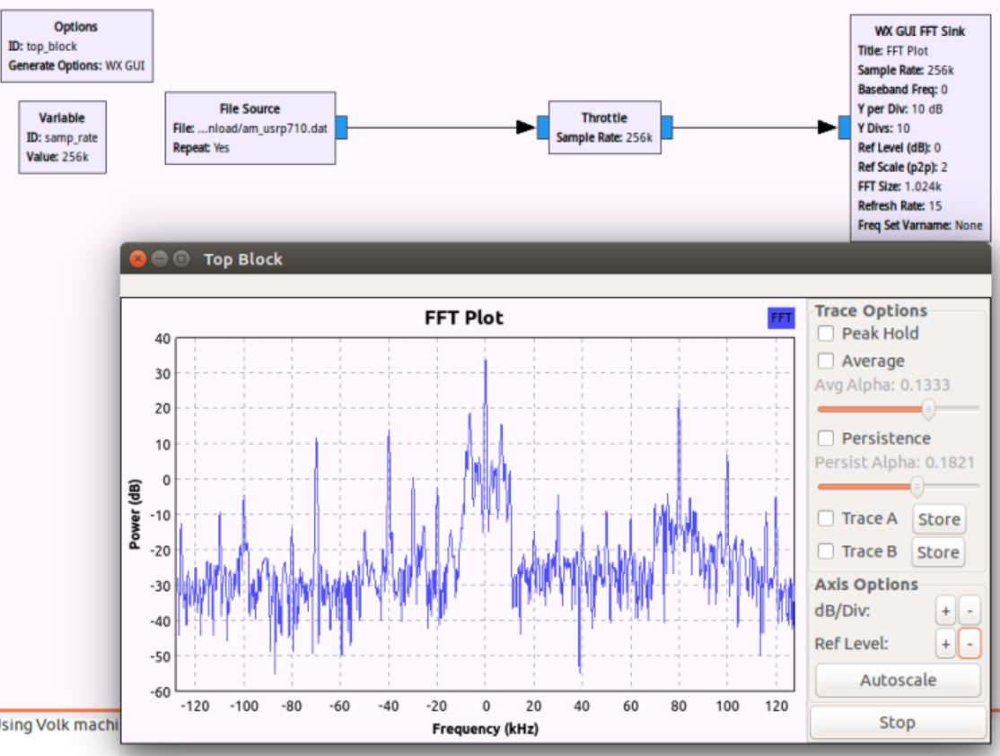</p>
<ol start="2">
<li>使用一个 Variable 模块和“Rational Resampler”模块</li>
</ol>
<p>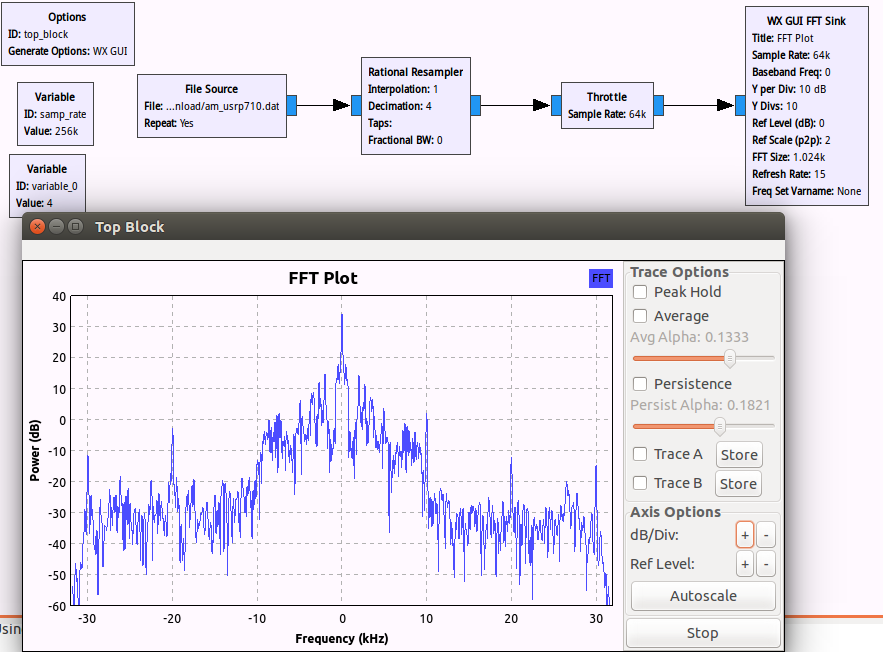</p>
<ol start="3">
<li>增加一个带通滤波器滤除其他的信号</li>
</ol>
<p>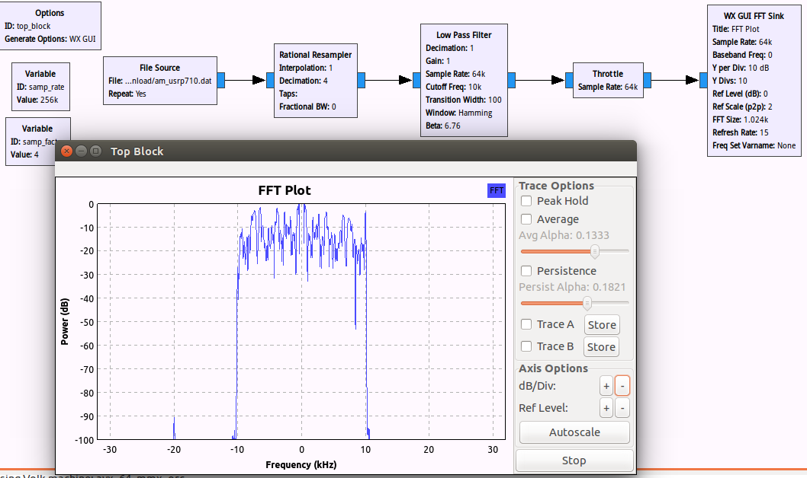</p>
<ol start="4">
<li>使用“Complex to Mag”模块将复数信号转为实数信号</li>
</ol>
<p>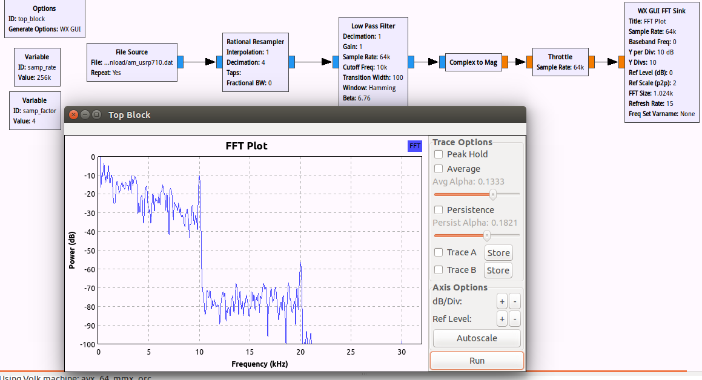</p>
<ol start="5">
<li>加入“audio sink、WX GUI scope sink”</li>
</ol>
<p>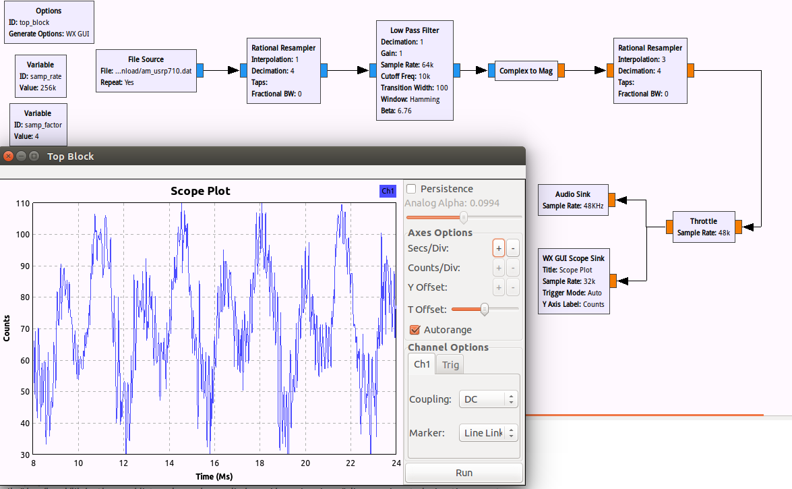</p>
<p>6.加入衰减器模块“Multiply Const”，同时使用“WX GUI Slider”模块调节输入扬声器的信号功率</p>
<p>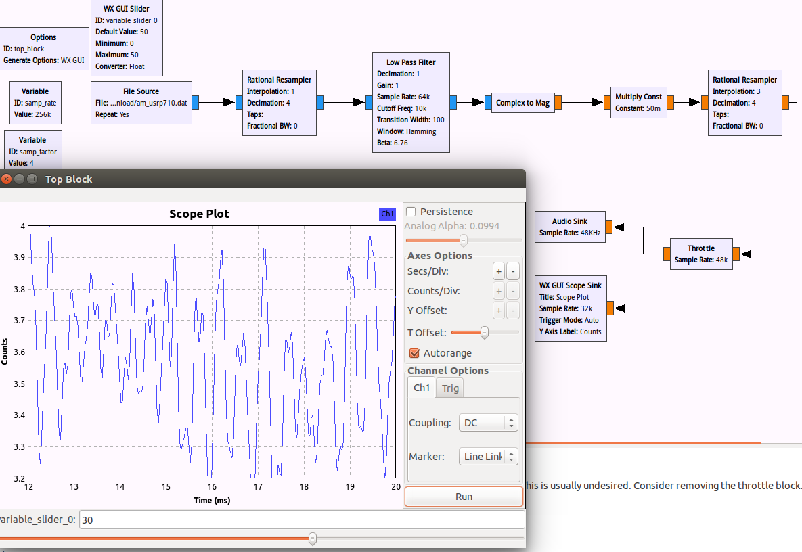</p>
<p>7.乘以一个余弦信号进行频谱的搬移</p>
<p>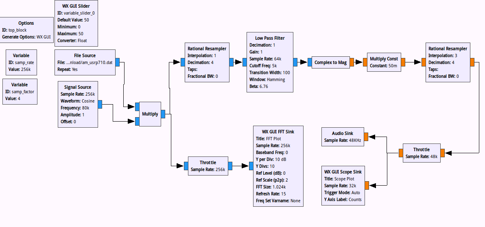</p>
<p>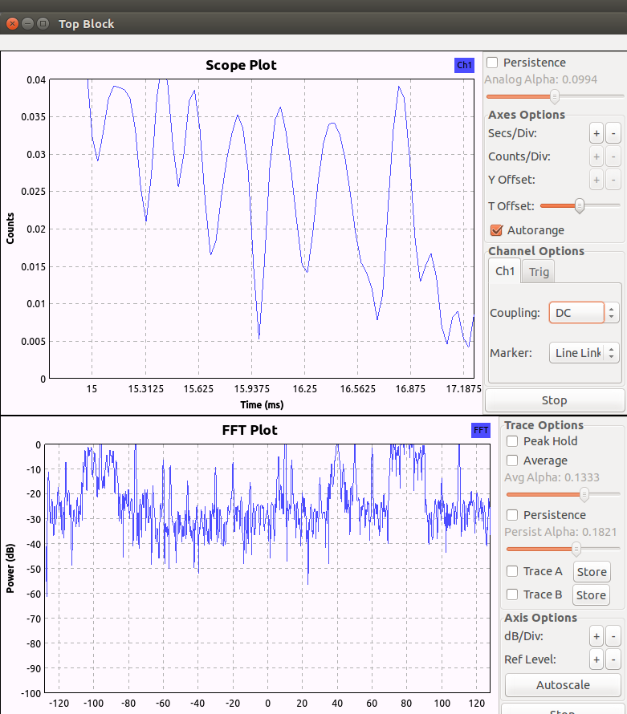</p>
<ol start="8">
<li>增加自动增益控制模块（ACG2）以及调节频率的 slider 模块</li>
</ol>
<p>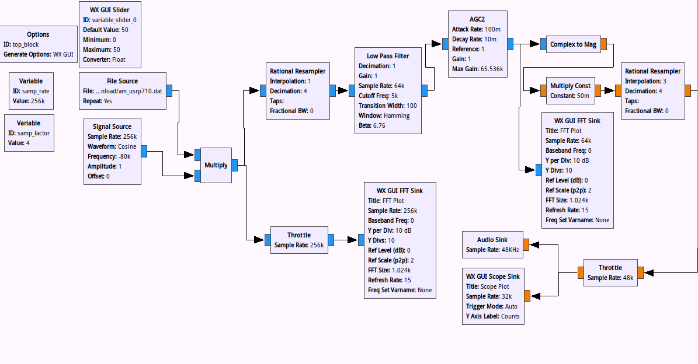</p>
<h2 id="三、AM电台的中心频率频谱图"><a href="#三、AM电台的中心频率频谱图" class="headerlink" title="三、AM电台的中心频率频谱图"></a>三、AM电台的中心频率频谱图</h2><p>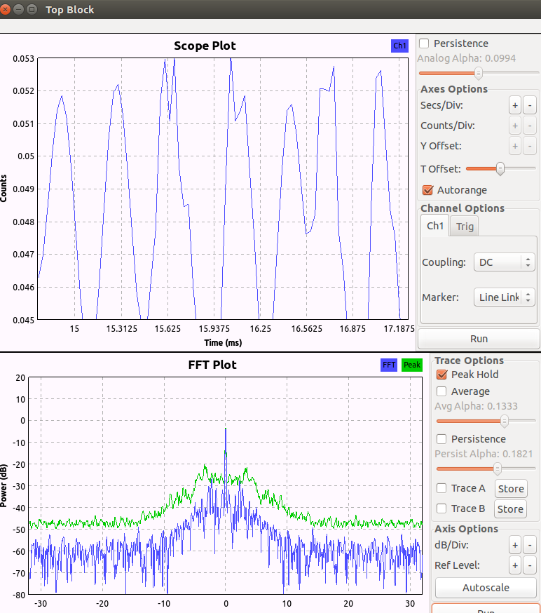</p>
<hr>
<h1 id="实验6-FM广播接收机及频谱分析"><a href="#实验6-FM广播接收机及频谱分析" class="headerlink" title="实验6 FM广播接收机及频谱分析"></a>实验6 FM广播接收机及频谱分析</h1><h2 id="一、USRP设备信息呈现-uhd-find-devices"><a href="#一、USRP设备信息呈现-uhd-find-devices" class="headerlink" title="一、USRP设备信息呈现 uhd_find_devices"></a>一、USRP设备信息呈现 uhd_find_devices</h2><p>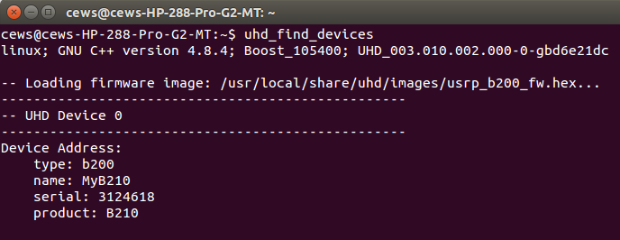</p>
<h2 id="二、谱分析流程图"><a href="#二、谱分析流程图" class="headerlink" title="二、谱分析流程图"></a>二、谱分析流程图</h2><p>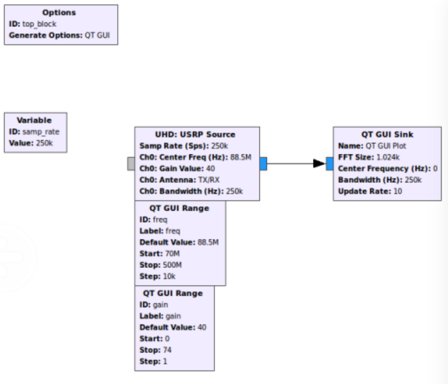</p>
<h2 id="三、FM调制与解调的原理"><a href="#三、FM调制与解调的原理" class="headerlink" title="三、FM调制与解调的原理"></a>三、FM调制与解调的原理</h2><p>接收广播信号，用重采样将接收到的信号数据速率与声卡采样速率匹配，最后用宽带调频接收对FM信号进行解调。</p>
<h2 id="四、FM收音机流程图"><a href="#四、FM收音机流程图" class="headerlink" title="四、FM收音机流程图"></a>四、FM收音机流程图</h2><p>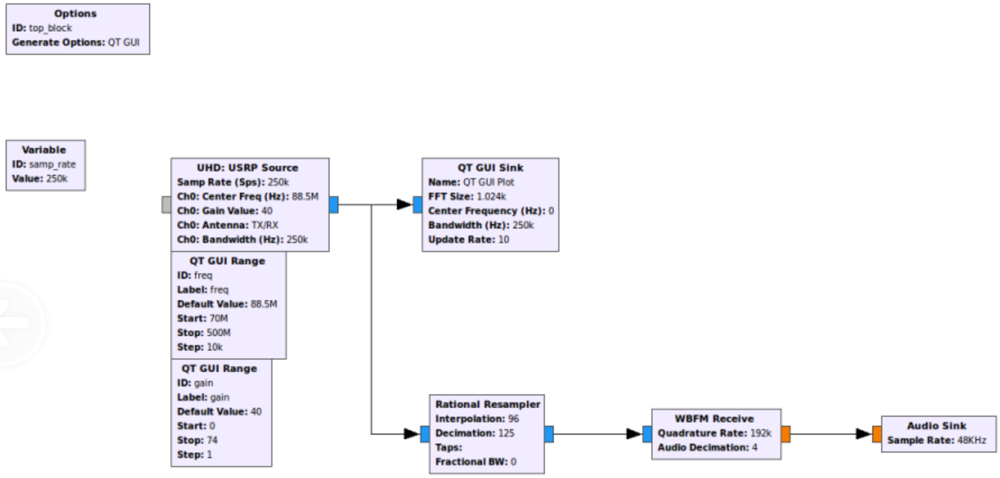</p>
<h2 id="五、收听频道的频谱"><a href="#五、收听频道的频谱" class="headerlink" title="五、收听频道的频谱"></a>五、收听频道的频谱</h2><p>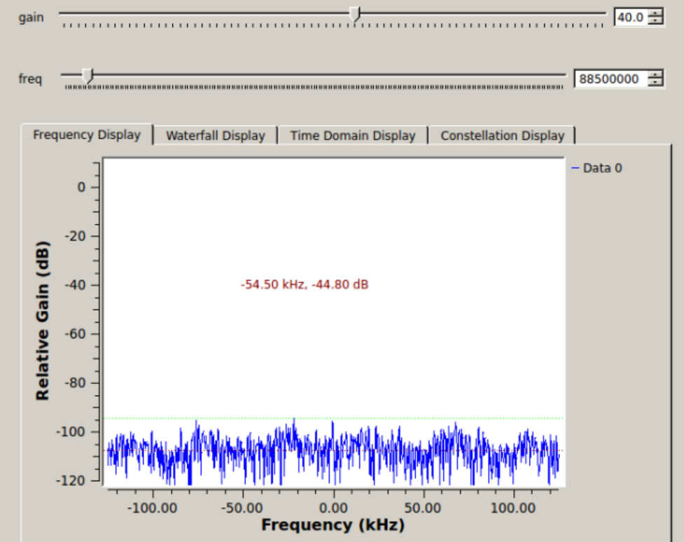</p>
<h1 id="实验7-伪基站搭建与-IMSI-捕获"><a href="#实验7-伪基站搭建与-IMSI-捕获" class="headerlink" title="实验7 伪基站搭建与 IMSI 捕获"></a>实验7 伪基站搭建与 IMSI 捕获</h1><h2 id="一、伪基站"><a href="#一、伪基站" class="headerlink" title="一、伪基站"></a>一、伪基站</h2><p>存在的原因：伪基站工作原理主要是利用了移动通信GSM系统设计上手机和基站之间连接的单向认证机制的缺陷，而2G网络就是基于GMS系统的。<br>CDMA2000、3G、4G不存在伪基站。</p>
<h2 id="二、OpenBTS编译成功"><a href="#二、OpenBTS编译成功" class="headerlink" title="二、OpenBTS编译成功"></a>二、OpenBTS编译成功</h2><p>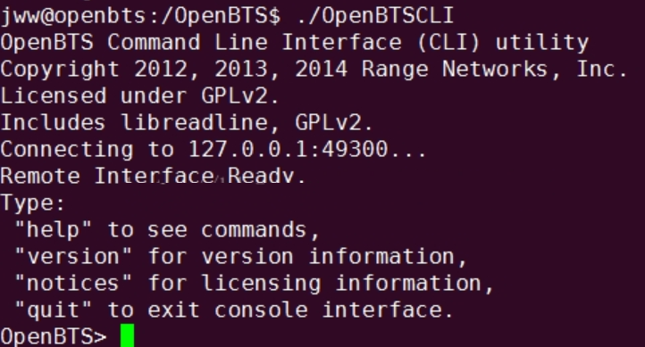</p>
<p>三、连接到本基站的手机IMSI截图</p>
<p>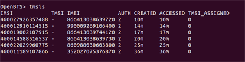</p>
<p>四、短信截图</p>
<p>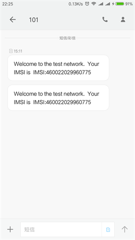</p>
<h1 id="实验8-使用gr-gsm进行GSM数据捕获及分析"><a href="#实验8-使用gr-gsm进行GSM数据捕获及分析" class="headerlink" title="实验8 使用gr-gsm进行GSM数据捕获及分析"></a>实验8 使用gr-gsm进行GSM数据捕获及分析</h1><h2 id="一、当前位置基站信息截图"><a href="#一、当前位置基站信息截图" class="headerlink" title="一、当前位置基站信息截图"></a>一、当前位置基站信息截图</h2><p>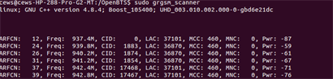</p>
<h2 id="二、实时捕获数据的wireshark截图"><a href="#二、实时捕获数据的wireshark截图" class="headerlink" title="二、实时捕获数据的wireshark截图"></a>二、实时捕获数据的wireshark截图</h2><p>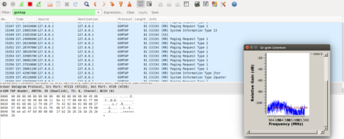</p>
<h2 id="三、下行短信截图"><a href="#三、下行短信截图" class="headerlink" title="三、下行短信截图"></a>三、下行短信截图</h2><p>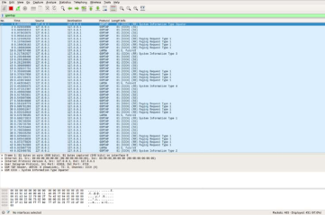</p>
<h2 id="四、为什么可以获得其他用户短信信息？"><a href="#四、为什么可以获得其他用户短信信息？" class="headerlink" title="四、为什么可以获得其他用户短信信息？"></a>四、为什么可以获得其他用户短信信息？</h2><p>因为在无线信道中可以监听到其他设备发出的通信信号，经过解码等操作后就能获得其他用户短信消息。</p>
<h1 id="实验9"><a href="#实验9" class="headerlink" title="实验9"></a>实验9</h1><h2 id="一、GPS定位原理"><a href="#一、GPS定位原理" class="headerlink" title="一、GPS定位原理"></a>一、GPS定位原理</h2><p>设GPS系统中卫星为Pi，P1、P2和P3的位置的位置信息可以通过星历数据计算得到，只要知道了信号的卫星发射时刻和 GPS 接收机收到信号的时刻，就可以计算出卫星到用户的距离，然而当地时间和卫星时间并不是同步的，会出现一个时间偏移量∆t，因此，这个时间偏移量∆t也应考虑进去，即公式为</p>
<p>$$<br>\sqrt{(x-x_i)^2+(x-y_i)^2+(x-z_i)^2}=C(\Delta t_i+t_i)<br>$$</p>
<h2 id="二、北斗与GPS原理的异同"><a href="#二、北斗与GPS原理的异同" class="headerlink" title="二、北斗与GPS原理的异同"></a>二、北斗与GPS原理的异同</h2><ul>
<li><p>相同点：均可实现全球定位</p>
</li>
<li><p>区别:</p>
<table>
<thead>
<tr>
<th align="center">北斗</th>
<th align="center">GPS</th>
</tr>
</thead>
<tbody><tr>
<td align="center">三频信号</td>
<td align="center">双频信号</td>
</tr>
<tr>
<td align="center">有源定位+无源定位</td>
<td align="center">无源定位</td>
</tr>
<tr>
<td align="center">有短报文通信服务</td>
<td align="center">无通信服务</td>
</tr>
<tr>
<td align="center">可获得其他人的位置信息</td>
<td align="center">只能获得自身位置信息</td>
</tr>
<tr>
<td align="center">境内监控</td>
<td align="center">非美国本土也有 地面监控 部分</td>
</tr>
</tbody></table>
</li>
</ul>
<h2 id="三、给出一个特定地点的经纬度信息，在百度地图中呈现并截图"><a href="#三、给出一个特定地点的经纬度信息，在百度地图中呈现并截图" class="headerlink" title="三、给出一个特定地点的经纬度信息，在百度地图中呈现并截图"></a>三、给出一个特定地点的经纬度信息，在百度地图中呈现并截图</h2><p>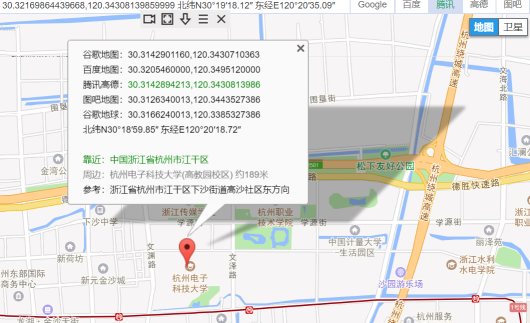</p>
<h2 id="四、定位到该特定地点并截图"><a href="#四、定位到该特定地点并截图" class="headerlink" title="四、定位到该特定地点并截图"></a>四、定位到该特定地点并截图</h2><p>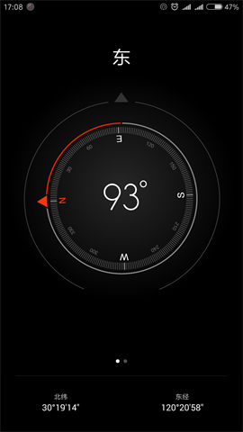</p>
<p>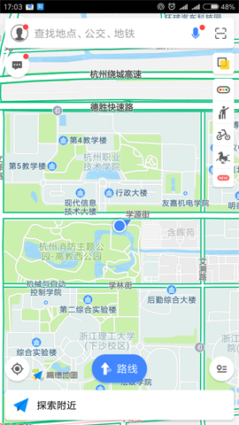</p>

    
  </div>

</article>


   

   
  <div class="box-prev-next clearfix">
    <a class="show pull-left" href="/2018/07/16/无线网络安全复习整理/">
        <i class="icon icon-angle-left"></i>
    </a>
    <a class="show pull-right" href="/2018/07/21/安装zsh以及oh-my-zsh/">
        <i class="icon icon-angle-right"></i>
    </a>
  </div>


</div>


  <a id="backTop" class="back-top">
    <i class="icon-angle-up"></i>
  </a>


  <div class="modal" id="modal">
  <span id="cover" class="cover hide"></span>
  <div id="modal-dialog" class="modal-dialog hide-dialog">
    <div class="modal-header">
      <span id="close" class="btn-close">关闭</span>
    </div>
    <hr>
    <div class="modal-body">
      <ul class="list-toolbox">
        
          <li class="item-toolbox">
            <a
              class="CIRCLE"
              href="/archives/"
              rel="noopener noreferrer"
              target="_self"
              >
              文章
            </a>
          </li>
        
          <li class="item-toolbox">
            <a
              class="CIRCLE"
              href="/category/"
              rel="noopener noreferrer"
              target="_self"
              >
              分类
            </a>
          </li>
        
          <li class="item-toolbox">
            <a
              class="CIRCLE"
              href="/tag/"
              rel="noopener noreferrer"
              target="_self"
              >
              标签
            </a>
          </li>
        
          <li class="item-toolbox">
            <a
              class="CIRCLE"
              href="/link/"
              rel="noopener noreferrer"
              target="_self"
              >
              友链
            </a>
          </li>
        
          <li class="item-toolbox">
            <a
              class="CIRCLE"
              href="/about/"
              rel="noopener noreferrer"
              target="_self"
              >
              关于我
            </a>
          </li>
        
          <li class="item-toolbox">
            <a
              class="CIRCLE"
              href="/search/"
              rel="noopener noreferrer"
              target="_self"
              >
              搜索
            </a>
          </li>
        
      </ul>

    </div>
  </div>
</div>


  
      <div class="fexo-comments comments-post">
    

    

    
    

    

    
    

    

  </div>

  

  <script type="text/javascript">
  function loadScript(url, callback) {
    var script = document.createElement('script')
    script.type = 'text/javascript';

    if (script.readyState) { //IE
      script.onreadystatechange = function() {
        if (script.readyState == 'loaded' ||
          script.readyState == 'complete') {
          script.onreadystatechange = null;
          callback();
        }
      };
    } else { //Others
      script.onload = function() {
        callback();
      };
    }

    script.src = url;
    document.getElementsByTagName('head')[0].appendChild(script);
  }

  window.onload = function() {
    loadScript('/js/bundle.js?235683', function() {
      // load success
    });
  }
</script>

</body>
</html>
